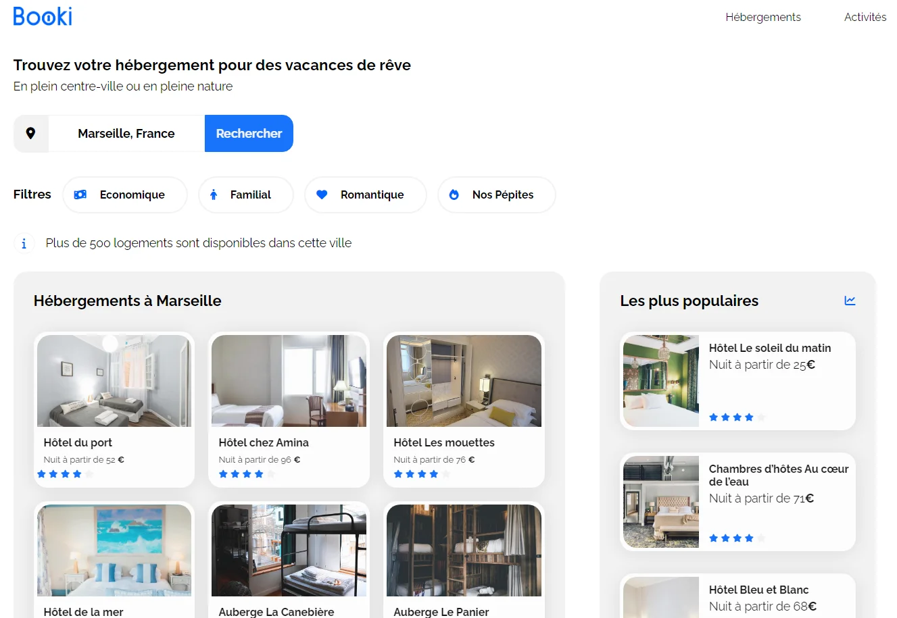
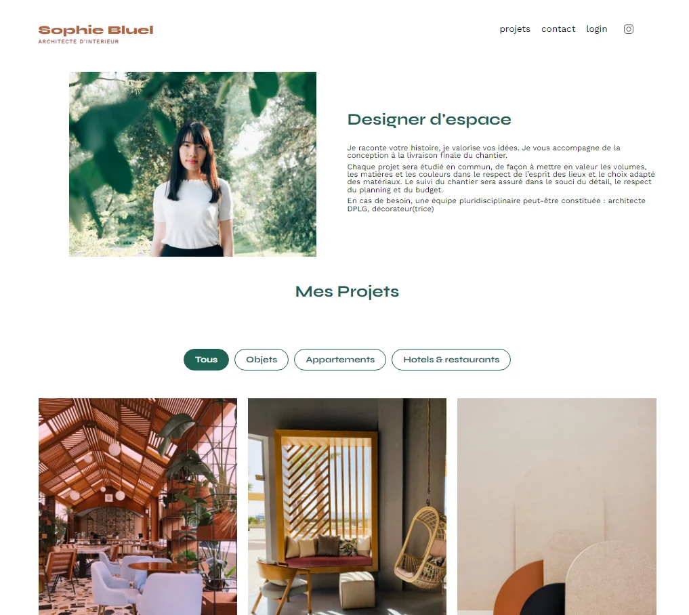
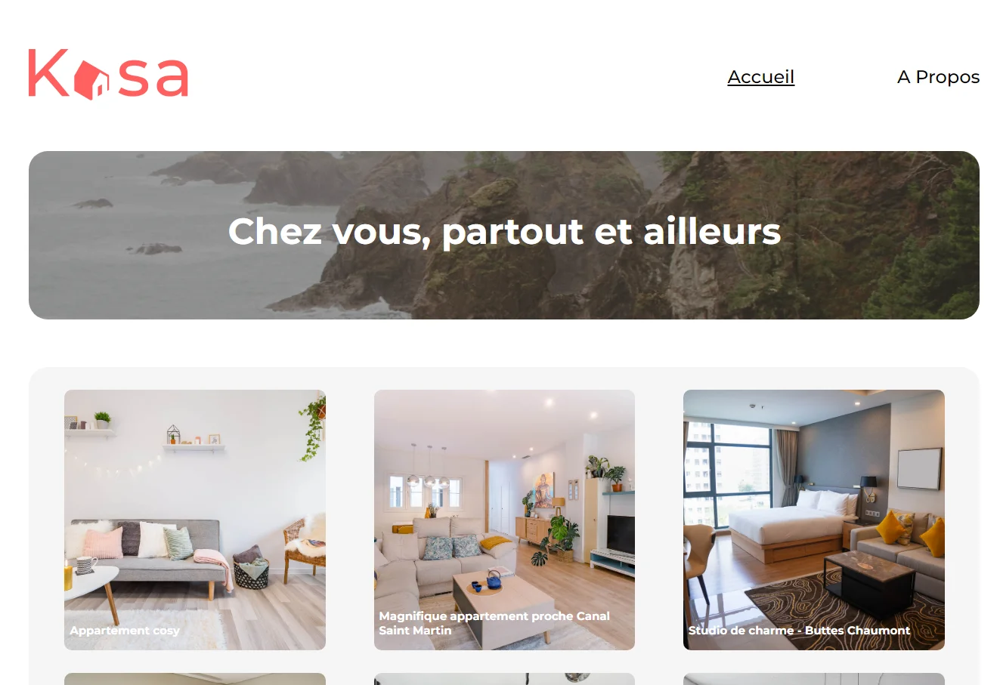
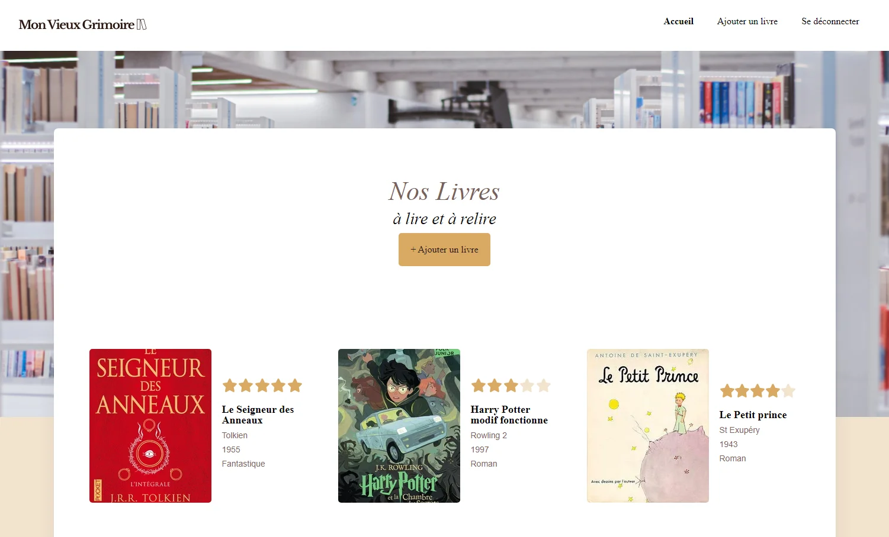

Cyril EL-HAKIM
Développeur web
Ingénieur dynamique de formation, je m'appelle Cyril et je possède une expérience diversifiée dans plusieurs secteurs d'activité. Mon parcours professionnel comprend notamment le pilotage de l'industrialisation, la gestion de projets dans divers domaines, la recherche et développement axée sur la résolution de problèmes thermiques, ainsi que le contrôle qualité de produits chirurgicaux.
Ma capacité à établir une relation de confiance mutuelle avec mes collègues atteste de ma détermination et de mon efficacité dans mes missions. Mes compétences reposent sur un sens aiguisé de l'organisation, une grande adaptabilité au travail en équipe, une ouverture d'esprit, une autonomie, une détermination affirmée et surtout une capacité à réagir efficacement avec mes interlocuteurs.
Avant de me tourner vers le développement web, j'ai acquis des certifications en tant que Scrum Master, Product Owner et Scaled Agilist 6.0. Cependant, désireux d'explorer de nouveaux horizons et de capitaliser sur des compétences dans des secteurs à forte demande, j'ai entrepris une formation intensive en développement web.
Cette transition a été une opportunité pour moi de m'immerger dans le monde du développement web et de devenir un développeur passionné. Sur ce portfolio, vous découvrirez mes compétences, mes projets et mon parcours dans le développement web.
Si vous êtes intéressé par une collaboration ou si vous avez des questions, n'hésitez pas à me contacter.
Merci pour votre visite et bonne découverte !
À propos
Mes ambitions de carrière
Passionné d'informatique, je suis fasciné par les possibilités infinies offertes par ce domaine en constante évolution. Ma spécialisation dans le développement front-end découle de cette passion. J'ai suivi une formation approfondie chez OpenClassrooms, une plateforme d'apprentissage en ligne réputée pour son excellence et sa rigueur pédagogique. Cette formation m'a permis d'acquérir des connaissances approfondies en développement front-end, me familiarisant ainsi avec les technologies web modernes et les meilleures pratiques de l'industrie.
En parallèle, passionné par le monde des investissements, mes objectifs futurs incluent la création de sites et d'applications comme moyen de communication, mettant en valeur mes compétences, augmentant ma visibilité et partageant mes expériences, notamment dans le domaine des investissements financiers.

Mes projets
Booki
Création d'un site web de réservation d'hébergements

Développement et intégration de l'interface front-end d'un site de location d’hébergements basée sur une conception réalisée avec Figma. Création d'une application web entièrement adaptative, garantissant une expérience utilisateur optimale sur tous les appareils.
- HTML
- CSS
- FIGMA
Sophie Bluel - Archiwebos
Création d'une page web dynamique avec JavaScript

Création d'une interface web interactive en utilisant JavaScript. Réalisation de la page de connexion ainsi que des fenêtres modales pour l'ajout, la modification et la suppression d'images.
- Javascript
- API
Nina Carduccci - Optimisation et Debug d'un site web

Optimisation globale du site web d'une photographe, en mettant l'accent sur l'accessibilité, les performances techniques et la mise en œuvre d'un référencement local efficace pour augmenter sa visibilité.
- SEO
- Lighthouse
- Wave
Kasa
Création d'un site de réservation d'hébergement avec React

Conception et réalisation du frontend d'un site de réservation d'hébergement en utilisant le framework React, garantissant une adaptabilité sur différents appareils. Ce travail inclut la création de composants, la définition des routes et l'analyse ainsi que la segmentation des maquettes réalisées avec Figma.
- SASS
- React
- React Router
- Vite.JS
Mon vieux Grimoire
Développement du back-end d'un site de notation de livres

Ce projet consiste à développer le backend d'un site de notation de livres. Nous allons mettre en place l'inscription des utilisateurs, créer une API REST et configurer la base de données pour stocker les informations nécessaires.
- Node JS
- Express
- Mongo DB
Mes compétences & outils d'expertise
Cette diversification des compétences m'a permis de développer mon expertise dans :